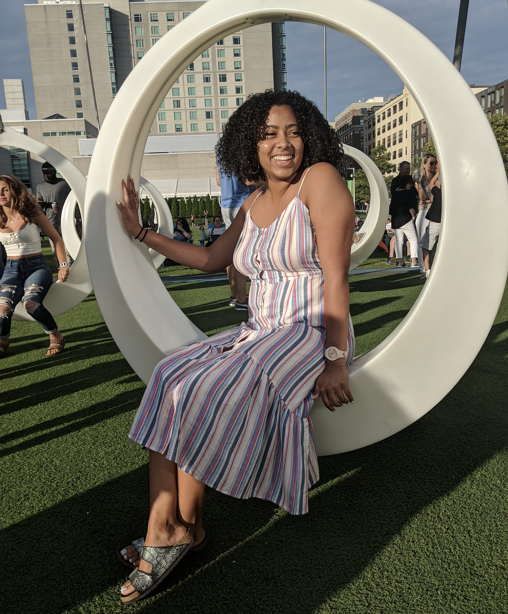
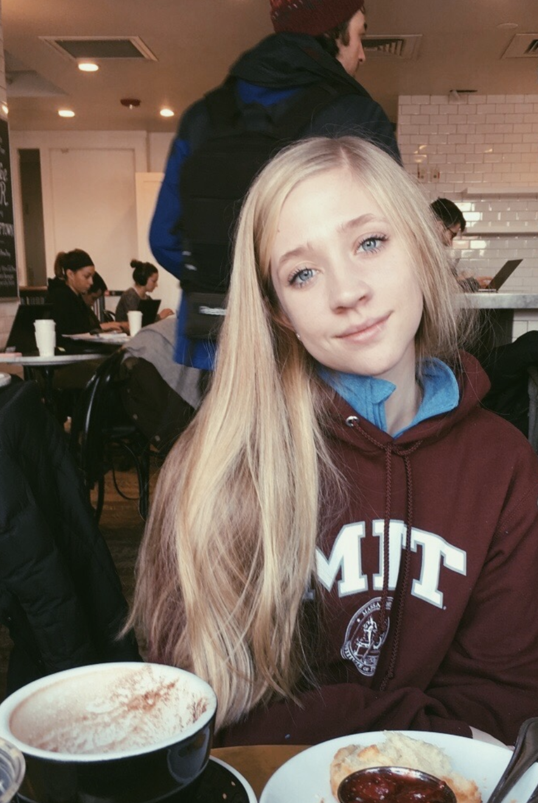

Our Captains!

Meet our lovely captains: Asia Hypsher and Catherine Johnson!
Asia is a 2021 studying Chemical Engineering!
Catherine is a 2022 studying Computer Science!
Our captains are in charge of helping with the running of practices, as well as planning, organizing, and executing team events.